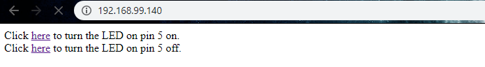

<h3> Simple WiFi Server </h3>
<p> Materials needed for this tutorial:
<ul>
<li><a href='https://www.adafruit.com/product/3405'>Huzzah board</a> </li>
<li>Protoboard</li>
<li>LED</li>
</ul>
</p>
<p> First we need to configure Arduino IDE to work with the Huzzah. First, download and install the <a href='http://www.silabs.com/products/development-tools/software/usb-to-uart-bridge-vcp-drivers'> CP2104 USB Driver</a>. Next, add this to Perferences > Additional Boards Manager URLs: <code>https://raw.githubusercontent.com/espressif/arduino-esp32/gh-pages/package_esp32_index.json</code>. Finally, under Tools > Boards Manager, add the "esp32" boards package. Select Adafruit ESP32 Feather as your board and select the corresponding port. </p>
<p> Note: the terms here can be confusing. <a href='https://en.wikipedia.org/wiki/ESP32'>ESP32</a> refers to a series of low-cost, low-power system-on-a-chip microcontrollers with integrated Wi-Fi and Bluetooth. Its precursor was the ESP8266 -- many tutorials will be compatible with both. <a href='https://www.adafruit.com/feather'>Feather</a> is a line of development boards from Adafruit. The <a href='https://www.adafruit.com/product/3405'>Huzzah32</a> is the specific Feather board that is built around the ESP32. </p>
<p> Once you have drivers and boards installed, navigate to File > Examples > Examples for Adafruit ESP32 Feather > WiFi > SimpleWifiServer. We'll work with this code, but first we need to make some changes. </p>
<p>The following lines demonstrate standard usage of the WiFi library (including the library, then creating a WiFiServer instance called server on port 80). </p>
<pre><code class="language-arduino">
#include <WiFi.h>
WiFiServer server(80);
</code></pre>
<p> Next, replace the following lines with your wifi SSID and password.</p>
<pre><code class="language-arduino">
const char* ssid = "yourssid";
const char* password = "yourpasswd";
</code></pre>
<p> Finally, connect an LED to pin 5 (SCK - <a href='https://learn.adafruit.com/adafruit-huzzah32-esp32-feather/pinouts'>see pinout</a> of the Huzzah. Upload the code and open your Serial monitor. If nothing shows up in your Serial monitor, press the reset button on the Huzzah. </p>
<p> Copy the IP address from your Serial monitor and paste it in your web browser. It should look like this: </p>

<p> The ESP32 is now acting as a web server on your local network. Clicking the links on the webpage create different GET requests, which pass different instructions to the ESP32 server. Try logging in with other devices on your network. Pay attention to the serial monitor; it will let you know when new clients connect to your server. </p>
<p> If you want to stream data to your browser without the overhead of HTTP GET requests, you'd have to use Websockets. <a href='https://esp8266-shop.com/blog/websocket-connection-between-esp8266-and-node-js-server/'>Node JS</a> is a great way to do that. </p>
<p> While this technique will work fine for controlling devices from within your home or other local network, the contents of your local server are not accessible to the world wide web. In other words, you won't be able to talk to your devices from outside of your LAN. There are a couple ways to get around that, which we'll discuss in the <a href='./huzzah1b.html'>next step.</a></p>